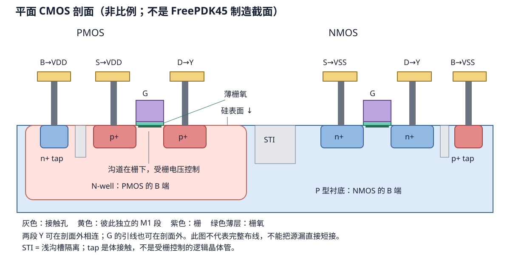

第 2 章 从 MOS 到 CMOS 逻辑
版图不是彩色矩形拼图，而是四端器件组成的电路
- 认识 MOS 的 G、D、S、B 四个端子及 NMOS/PMOS 的导通条件。
- 正确理解版图中的 W 和 L，不再把 poly 的长边误认为沟道长度。
- 从上拉/下拉网络推导 INV、NAND、NOR，而不是背版图形状。
2.1 MOS 是受电压控制的四端器件
| 端子 | 英文 | 作用 |
|---|---|---|
| G | Gate | 栅极电压控制沟道是否形成。 |
| D | Drain | 沟道一侧的扩散端。数字版图中左右两端常可交换，名称由偏置和网络定义。 |
| S | Source | 沟道另一侧的扩散端。 |
| B | Body/Bulk | 体端，影响阈值并形成寄生 PN 结；不能在真实工艺中凭空忽略。 |
入门时可把 MOS 暂时看作“由栅电压控制的开关”，但它不是理想开关。NMOS 通常在 VGS > VTH 时形成沟道，擅长把节点拉低；PMOS 通常在栅相对源足够低时形成沟道，擅长把节点拉高。
| 器件 | 栅输入为 0 | 栅输入为 1 | 在 CMOS 门中的典型位置 |
|---|---|---|---|
| NMOS | 关 | 开 | 输出与 VSS 之间的下拉网络 |
| PMOS | 开 | 关 | VDD 与输出之间的上拉网络 |
2.2 体端、井与 tap 为什么不能省略
在常见 bulk CMOS 中，PMOS 位于 N-Well，NMOS 位于 P-Well 或 P 型衬底。通常把 PMOS body 接 VDD，把 NMOS body 接 VSS，使体二极管保持反偏并稳定阈值。版图中的 well/substrate tap 就是把井或衬底可靠接到电源的结构。

某些标准单元库采用 tapless 架构：普通逻辑单元内部不放 tap，而是在芯片行中周期性插入专用 tap cell。无论哪一种，body 网络都必须在库架构和外部 LVS 中明确。LibreCell 本地内部 LVS 为兼容缺少 tap 的单元会忽略第四端，因此它只能作早期连通性检查。
2.3 从俯视版图正确理解 W/L
当一条 Poly 穿过 Active 时形成一个 MOS。假设电流从交叠区左侧扩散流向右侧扩散：
- L（沟道长度）是沿源到漏方向，栅覆盖沟道的短尺寸；在常见图形里往往接近那条细 Poly 的线宽。
- W（沟道宽度）是与源漏电流方向垂直的 Active×Poly 交叠长度；通常沿 Poly 的长方向量。
↑ W：交叠的长方向
Source ───────┃─────── Drain
┃ Poly
← L → 电流方向：Source → Drain
注意：L 不是整条 Poly 的长度；W 也不是 Active 矩形的总宽度。减小 L 通常可增强驱动但受工艺规则和器件模型限制；增大 W 通常降低导通电阻，却增加栅/扩散电容和面积。宽器件可以折成多个 finger：多个栅条并联控制多个窄沟道，总有效宽度近似为各 finger 宽度之和，但寄生和端部效应需要抽取确认。
2.4 CMOS 反相器：两个互补网络
VDD
│
PMOS gate=A
│
Y
│
NMOS gate=A
│
VSS| A | PMOS | NMOS | Y |
|---|---|---|---|
| 0 | 导通 | 截止 | 1（被拉到 VDD） |
| 1 | 截止 | 导通 | 0（被拉到 VSS） |
静态 CMOS 组合门由两个互补网络构成：
- PDN（pull-down network）由 NMOS 构成，在输出应为 0 的输入组合下连通 Y→VSS。
- PUN（pull-up network）由 PMOS 构成，是 PDN 的对偶，在输出应为 1 时连通 VDD→Y。
理想稳态下不应同时存在 VDD→VSS 的直流通路；切换期间则可能短暂同时导通。
2.5 串联表示 AND，并联表示 OR——但要先说明“导通条件”
两个开关串联时必须都导通，路径才连通；并联时任一支路导通即可。因此：
| NMOS 下拉网络 | 何时 Y 被拉低 | 得到的门 |
|---|---|---|
| A、B 串联 | A=1 AND B=1 | Y = NOT(A AND B)，即 NAND |
| A、B 并联 | A=1 OR B=1 | Y = NOT(A OR B)，即 NOR |
PUN 使用 PMOS，控制极性相反，同时把串联和并联对调。这个“对偶”关系比死记每个门的晶体管图更可靠。
2.6 晶体管尺寸不是“越大越好”
电子迁移率通常高于空穴迁移率，因此要获得近似对称的上升/下降能力，PMOS 往往需要比 NMOS 更宽；具体比例由目标工艺模型和负载仿真决定，不能套一个跨工艺常数。串联堆叠的器件等效电阻更大，也常需要增宽。
标准单元尺寸设计是多目标折中：
- 输出驱动和延迟；
- 输入电容和前级负担；
- 动态功耗、短路功耗和漏电；
- 单元面积、内部可布线性与 pin access；
- 制造规则、可靠性以及 PVT 变化。
- 版图中一条竖直 Poly 穿过一条水平 Active，哪个方向通常是 L，哪个方向是 W？
- 为什么反相器切换时不能说“任何时刻只有一个管导通”？
- 若 NMOS 下拉网络是 A、B 并联，输出逻辑是什么？对应 PMOS 如何连接？
参考答案
L 是沿水平源漏电流方向的 Poly 短尺寸，W 是交叠区沿竖直 Poly 的长度。输入经过中间电压时两管可能同时部分导通。并联 NMOS 在 A 或 B 为 1 时拉低，得到 NOR；对应两个 PMOS 串联。